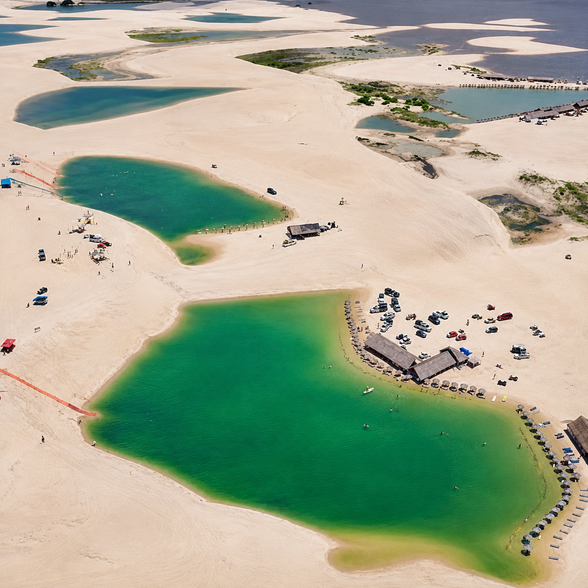
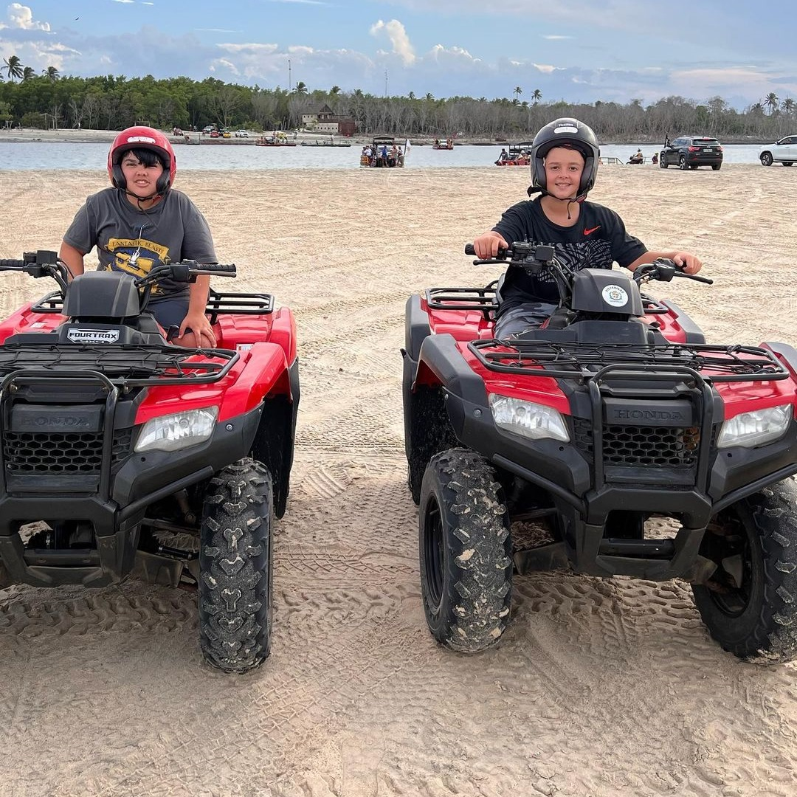
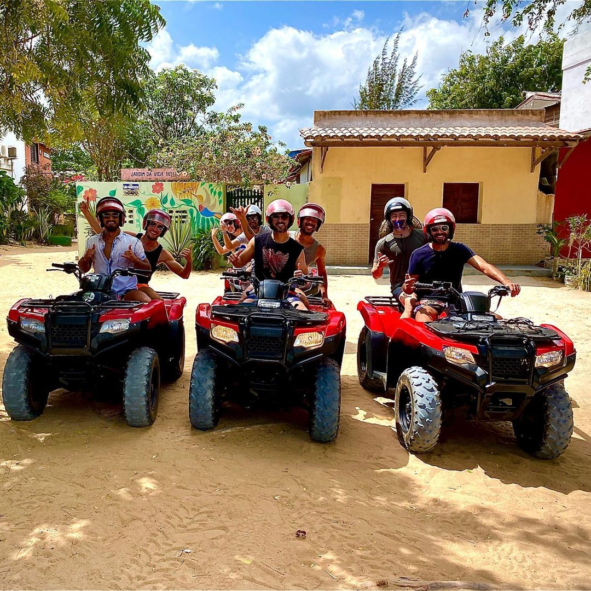
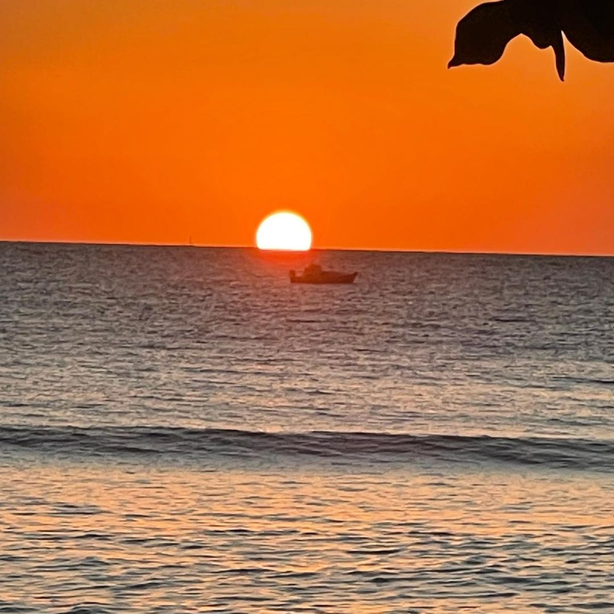

CEARÁ, BRASIL · COM OS PÉS NA AREIA
Tem lugares
que a gente
leva na alma.
Jeri é um deles. Entre dunas, lagoas e o vento no rosto, a sua próxima boa história começa aqui.
Encontre seu passeio
um pedacinho de paraíso.Esse cartão-postal
pode ser seu.

colecionando momentos ♡ESCOLHA O SEU CAMINHO
Um roteiro. Mil lembranças.
Tem um lado de Jeri esperando por você.
Qual vai ser a sua próxima descoberta?


MUITO PRAZER, SOMOS A QUADRITOUR JERI
Mais do que chegar.
É sentir o caminho.
A gente acredita que uma viagem fica na memória pelos momentos que você vive. Pelo primeiro encontro com as dunas. Pela pausa na lagoa. Pela vontade de ficar mais um dia.
Com passeios de quadriciclo, buggy, UTV, jardineira e opções de transfer, ajudamos você a encontrar o seu jeito de conhecer Jericoacoara.
DO PASSEIO PARA A MEMÓRIA
A vida fica melhor lá fora.
Um pouco dos dias que já vivemos por aqui.
Mais histórias no @quadritourjeriSEU PRÓXIMO CAPÍTULO
A mala é sua.
O caminho, deixa
com a gente.
Conte o que você tem em mente. Nossa equipe conversa com você sobre roteiros, valores e disponibilidade.
(88) 99752-0086Nos vemos em Jeri!ANTES DE FAZER AS MALAS
Só mais uma coisinha…
Como faço para reservar um passeio?
Escolha um passeio e fale com a equipe pelo WhatsApp. Vamos confirmar a disponibilidade, os valores e as condições antes de combinar a reserva.
Qual a diferença entre o Lado Leste e o Oeste?
Entre as opções do Lado Leste estão as Lagoas Azul e Paraíso e Barrinha. No Lado Oeste, você encontra passeios para Tatajuba e Mangue Seco. Consulte a equipe sobre as paradas de cada roteiro.
Vocês também fazem transfer?
Sim. Temos opções entre Fortaleza e Jericoacoara via praia e transfer 4x4 via asfalto. Consulte datas, pontos de saída e valores com a equipe.
O que preciso saber antes de confirmar?
Confirme horários, ponto de encontro, itens incluídos e condições do passeio com a equipe. A política informada no site da QuadriTour Jeri prevê que, em caso de desistência, não há devolução do sinal.